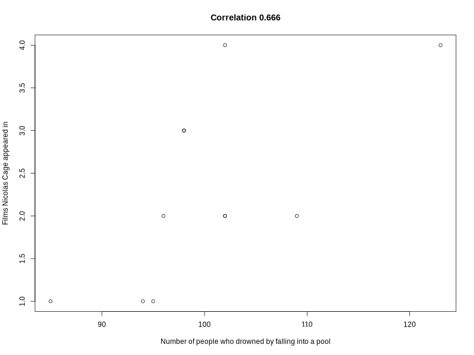
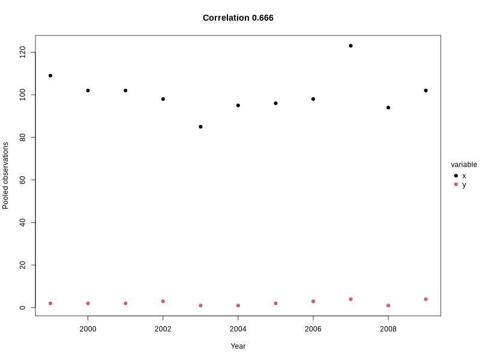
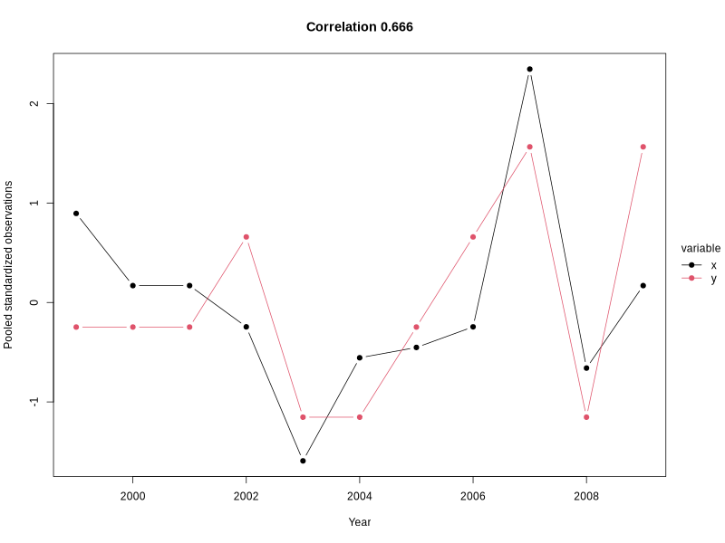

Spurious correlations
The goal of spuriouscorrelations is to keep alive the amazing examples from Tyler Vigen. Unfortunately, as of 2023-10-09, the website is down as my students noticed. Therefore, I decided to use the snapshot from the Internet Wayback Machine to save the datasets from 2023-06-07.
Installation
You can install the CRAN version of spuriouscorrelations with:
install.packages("spuriouscorrelations")You can install the development version of spuriouscorrelations with:
remotes::install_github("pachadotdev/spuriouscorrelations")Example
The package covers multiple examples for different spurious (and curious) correlations.
Here is a basic example which shows you how to plot a spurious correlation for the variables
- x: Number of people who drowned by falling into a pool
- y: Films Nicolas Cage appeared in
library(spuriouscorrelations)
library(tinyplot)
pool_drownings
# year x y
# 1 1999 109 2
# 2 2000 102 2
# 3 2001 102 2
# 4 2002 98 3
# 5 2003 85 1
# 6 2004 95 1
# 7 2005 96 2
# 8 2006 98 3
# 9 2007 123 4
# 10 2008 94 1
# 11 2009 102 4
cor(pool_drownings$x, pool_drownings$y)
# [1] 0.6660043
tinyplot(
y ~ x,
data = pool_drownings,
main = sprintf("Correlation %s", round(cor(pool_drownings$x, pool_drownings$y), 3)),
xlab = "Number of people who drowned by falling into a pool",
ylab = "Films Nicolas Cage appeared in"
)
Converting the data to long format simplified plotting both variables per year:
pool_drownings_2 <- reshape(
pool_drownings,
varying = c("x", "y"), # columns to collapse
v.names = "value", # name of the new value column
timevar = "variable", # name of the new ID column
times = c("x", "y"), # values to populate the ID column
direction = "long" # target format
)
pool_drownings_2
# year variable value id
# 1.x 1999 x 109 1
# 2.x 2000 x 102 2
# 3.x 2001 x 102 3
# 4.x 2002 x 98 4
# 5.x 2003 x 85 5
# 6.x 2004 x 95 6
# 7.x 2005 x 96 7
# 8.x 2006 x 98 8
# 9.x 2007 x 123 9
# 10.x 2008 x 94 10
# 11.x 2009 x 102 11
# 1.y 1999 y 2 1
# 2.y 2000 y 2 2
# 3.y 2001 y 2 3
# 4.y 2002 y 3 4
# 5.y 2003 y 1 5
# 6.y 2004 y 1 6
# 7.y 2005 y 2 7
# 8.y 2006 y 3 8
# 9.y 2007 y 4 9
# 10.y 2008 y 1 10
# 11.y 2009 y 4 11
tinyplot(
value ~ year | variable, # "|" indicates the groping variable for the legend
data = pool_drownings_2,
main = sprintf("Correlation %s", round(cor(pool_drownings$x, pool_drownings$y), 3)),
xlab = "Year",
ylab = "Pooled observations",
pch = 19 # solid dot shape
)
How about standarzing the variables to avoid the different scale visibility issue?
pool_drownings_3 <- pool_drownings
pool_drownings_3$x <- (pool_drownings_3$x - mean(pool_drownings_3$x)) / sd(pool_drownings_3$x)
pool_drownings_3$y <- (pool_drownings_3$y - mean(pool_drownings_3$y)) / sd(pool_drownings_3$y)
pool_drownings_3 <- reshape(
pool_drownings_3,
varying = c("x", "y"), # columns to collapse
v.names = "value", # name of the new value column
timevar = "variable", # name of the new ID column
times = c("x", "y"), # values to populate the ID column
direction = "long" # target format
)
pool_drownings_3
# year variable value id
# 1.x 1999 x 0.8952867 1
# 2.x 2000 x 0.1696333 2
# 3.x 2001 x 0.1696333 3
# 4.x 2002 x -0.2450258 4
# 5.x 2003 x -1.5926679 5
# 6.x 2004 x -0.5560201 6
# 7.x 2005 x -0.4523554 7
# 8.x 2006 x -0.2450258 8
# 9.x 2007 x 2.3465935 9
# 10.x 2008 x -0.6596849 10
# 11.x 2009 x 0.1696333 11
# 1.y 1999 y -0.2470999 1
# 2.y 2000 y -0.2470999 2
# 3.y 2001 y -0.2470999 3
# 4.y 2002 y 0.6589330 4
# 5.y 2003 y -1.1531327 5
# 6.y 2004 y -1.1531327 6
# 7.y 2005 y -0.2470999 7
# 8.y 2006 y 0.6589330 8
# 9.y 2007 y 1.5649658 9
# 10.y 2008 y -1.1531327 10
# 11.y 2009 y 1.5649658 11
tinyplot(
value ~ year | variable, # "|" indicates the groping variable for the legend
data = pool_drownings_3,
main = sprintf("Correlation %s", round(cor(pool_drownings$x, pool_drownings$y), 3)),
xlab = "Year",
ylab = "Pooled standardized observations",
pch = 19, # solid dot shape
type = "b" # add line to see the trend clearly
)